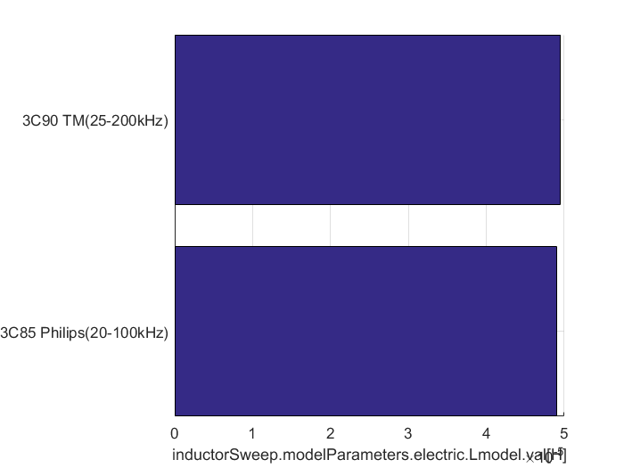
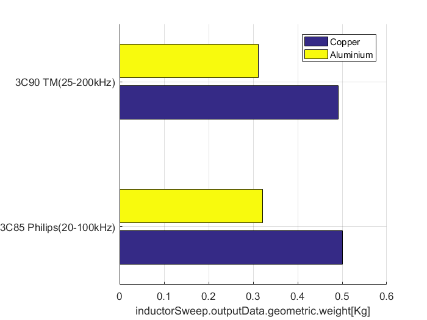
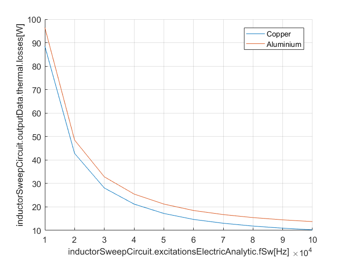
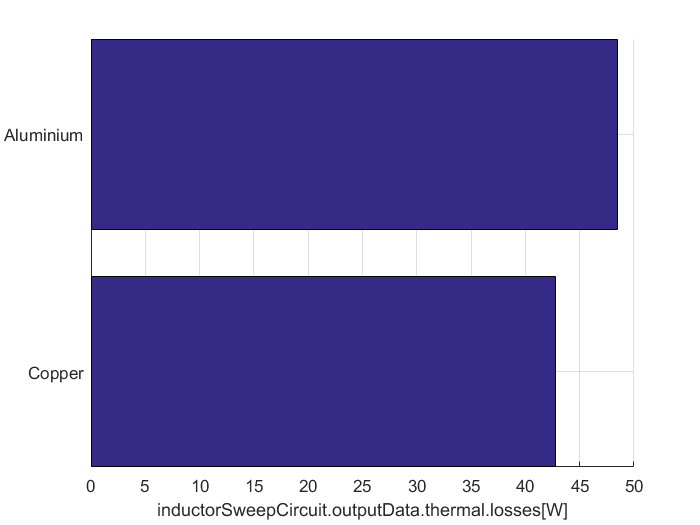
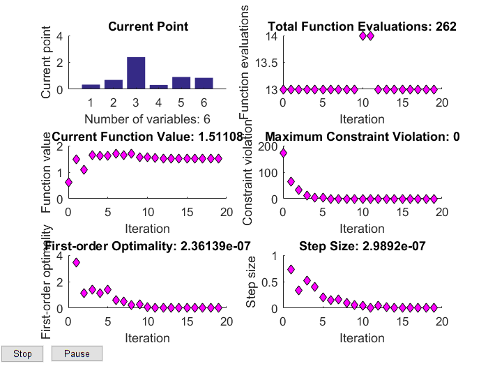
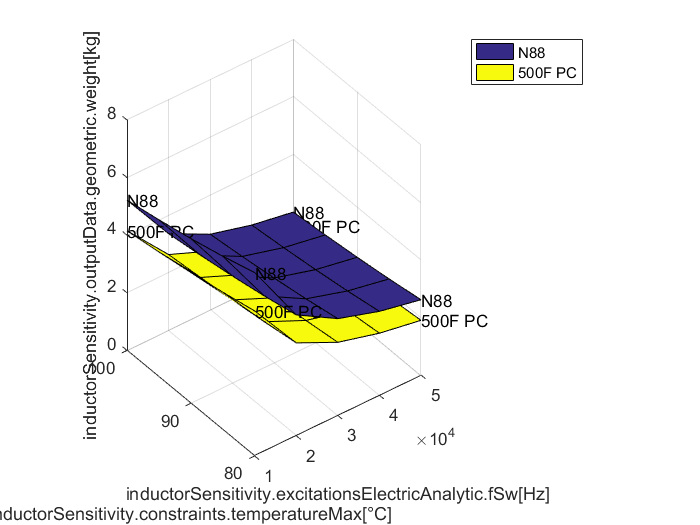
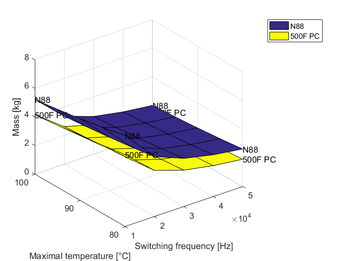

Sweeping Analysis
In some cases, the designer wants to know what is the impact of changing a certain parameter in the design or what is the impact in the final solution if a certain design constraint is modified
Inputs sweeping
Once the model is defined, the user might want to know what is the impact in some parameters when one the inputs is modified
The tool to perform this kind of sweep analysis is called SweepTool.SweepTool.
mySweepTool = SweepTool.SweepTool;
Then we add the element that we want to look the sensitivity. In this case we will look the variation of an Inductor.
myInductor = Comp3d.InductorCustomEI('name','inductorSweep'); mySweepTool.addElement(myInductor);
We select the variables that we are going to change to look the sensibility. In this case, the variables we are going to change are:
- Magnetic materials (3C85,3C90)
- Winding materials (Copper, Aluminium)
- Leg width
The command to add the sweeping variable is SweepTool variable.(Name of the component.Name of the variable,vector(numeric) or cell(char) values to vary,units)
mySweepTool.addVariable( 'inductorSweep.materials.magneticCore', {'3C85 Philips(20-100kHz)','3C90 TM(25-200kHz)'}, 'core'); mySweepTool.addVariable( 'inductorSweep.materials.electricConductor', {'Copper','Aluminium'}, 'conductor'); mySweepTool.addVariable( 'inductorSweep.dimensions.legWidth', 0.010:0.02:0.020, 'meter');
Once the sweep variables have been determined we need to determine which are the variables we want to display the impact. The command to add the the outputs is Sweep Tool variable.addOuput(name of the output,units)
In this case the chosen outputs to plot are the mass and the inductance value
mySweepTool.addOutput( 'inductorSweep.outputData.geometric.weight', 'Kg'); mySweepTool.addOutput( 'inductorSweep.modelParameters.electric.Lmodel.val', 'H');
Once all the input/output variables have been determined we proceed to the evaluation. The instruction is SweepTool variable.evaluate.
mySweepTool.evaluate;
Then, we can perform various plots to show the sensibility. In these plots, we can show the sensibility up to three different variables. The command to perform this operation is Sweep Tool variable.plotOutput(name of the component.name of the output,name of input ,...)
For example, let us plot the inductance value as function of the electricConductor when we chose a 3C85 magnetic core and legWidth of 0.02
mySweepTool.plotOutput('inductorSweep.modelParameters.electric.Lmodel.val','myInductor.materials.magneticCore',{'3C85 Philips(20-100kHz)'},... 'myInductor.dimensions.legWidth',0.02);
We can plot as well the mass as a function of all the inputs (up to 3)
mySweepTool.plotOutput('inductorSweep.outputData.geometric.weight');

Sweeping analysis using a circuit solver
In some case we might want to plot using a circuit solver, where a circuit element parameter changes.
For example, let us consider we want to look what is the impact in the losses when the switching frequency of a buck converter is changed.
mySweepTool = SweepTool.SweepTool; myInductor = Comp3d.InductorCustomEI('name','inductorSweepCircuit');
We describe the circuit.
circuit = Ckt.CktComposite();
n = circuit.createNode(4);
circuit.addGnd(n(2));
circuit.addCkt(Vdc(200),{n{1},n{2}});
dcdcConvert = Chopper();
dcdcConvert.modul.fCar = 10e3;
dcdcConvert.opPoint.alphaBuck = 0.5;
circuit.addCkt(dcdcConvert,{n{1},n{3},n{2}});
circuit.addCkt(myInductor.electricModel,{n{3},n{4}});
circuit.addCkt(Resistor(1),{n{4},n{2}});
Warning: SimulationSolver.Facture: Ootee by default Warning: The electric model of Comp3d.InductorCustomEI:inductorSweepCircuit has changed
The excitation object is set according to our particular problem
myInductor.excitationsElectricAnalytic = AnalyticalExcitation.InductorExcitation; myInductor.excitationsElectricAnalytic.vHv = 200; myInductor.excitationsElectricAnalytic.vLv = 100; myInductor.excitationsElectricAnalytic.iDc = 100; myInductor.excitationsElectricAnalytic.fSw = 20e3; myInductor.excitationsElectricAnalytic.nSample = 1000;
We add the inductor to the sweep tool.
mySweepTool.addElement(myInductor);
And we determine the inputs, the outputs and the elements.
mySweepTool.addVariable( 'inductorSweepCircuit.materials.electricConductor', {'Copper','Aluminium'}, 'conductor'); mySweepTool.addVariable( 'inductorSweepCircuit.materials.magneticCore', {'3C85 Philips(20-100kHz)','3C90 TM(25-200kHz)'}, 'core'); mySweepTool.addVariable( 'inductorSweepCircuit.excitationsElectricAnalytic.fSw', 10e3:10e3:100e3, 'Hz'); mySweepTool.addOutput( 'inductorSweepCircuit.outputData.thermal.losses','W');
Once all the input/output variables have been determined we proceed to the evaluation.
mySweepTool.evaluate;
And we plot the losses for the 3C85 material.
mySweepTool.plotOutput('inductorSweepCircuit.outputData.thermal.losses','inductorSweepCircuit.materials.magneticCore',{'3C85 Philips(20-100kHz)'});
Or just for a frequency of 20 kHz.
mySweepTool.plotOutput('inductorSweepCircuit.outputData.thermal.losses','inductorSweepCircuit.materials.magneticCore',{'3C85 Philips(20-100kHz)'},... 'inductorSweepCircuit.excitationsElectricAnalytic.fSw',20e3);
Optimization parameter sweeping
In the previous case we looked what was the impact of the switching frequency for a certain inductor. However, the user might want to know what is the impact in the final mass when performing an optimization and a variation of the switching frequency.
The class that regroups the optimization methods and the sweeping tool functionalities is SweepTool.SweepTool
For example, let us see the impact on the optimal component mass as function of the switching frequency. First we create the class and add it as an optimization.
mySensitivityOptimizer = OptimProblem.SensitivityOptimizer(); myInductor = Comp3d.InductorCustomEI('name','inductorSensitivity'); mySensitivityOptimizer.addComp3d(myInductor);
We create the analytical circuit and add it to the optimization
myInductor.excitationsElectricAnalytic = AnalyticalExcitation.InductorExcitation; myInductor.excitationsElectricAnalytic.vHv = 200; myInductor.excitationsElectricAnalytic.vLv = 100; myInductor.excitationsElectricAnalytic.iDc = 100; myInductor.excitationsElectricAnalytic.fSw = 20e3; myInductor.excitationsElectricAnalytic.nSample = 1000;
In this case, the parameters that vary are:
- Core Material : N88 (Ferrite), 500F PC (Nanocrystallin)
- Switching frequency: [10kHz,50kHz]
- Maximal temperature : [80,100]
And the output is the mass of the inductor.
mySensitivityOptimizer.addElement(myInductor); mySensitivityOptimizer.addVariable( 'inductorSensitivity.materials.magneticCore', {'N88','500F PC'}, 'core'); mySensitivityOptimizer.addVariable( 'inductorSensitivity.excitationsElectricAnalytic.fSw', 10e3:10e3:50e3, 'Hz'); mySensitivityOptimizer.addVariable( 'inductorSensitivity.constraints.temperatureMax', 80:5:100, '°C'); mySensitivityOptimizer.addOutput( 'inductorSensitivity.outputData.geometric.weight','kg');
We can set the optimization criteria and the algorithm as in any optimization problem
mySensitivityOptimizer.criteria = {'mass'};
mySensitivityOptimizer.optimAlgoType = 'GradientDescent';
The sensitivity analysis is launched, in this case the sensitivity parameters that give the optimal mass are given
mySensitivityOptimizer.optimAlgo.options.Display = 'off';
[x, fval] = mySensitivityOptimizer.evaluate;
Successful optimization! Exit flag = 2. Change in X too small. Successful optimization! Exit flag = 1. First order optimality conditions satisfied. Successful optimization! Exit flag = 2. Change in X too small. Successful optimization! Exit flag = 1. First order optimality conditions satisfied. Successful optimization! Exit flag = 2. Change in X too small. Successful optimization! Exit flag = 2. Change in X too small. Successful optimization! Exit flag = 2. Change in X too small. Successful optimization! Exit flag = 1. First order optimality conditions satisfied. Successful optimization! Exit flag = 2. Change in X too small. Successful optimization! Exit flag = 1. First order optimality conditions satisfied. Successful optimization! Exit flag = 1. First order optimality conditions satisfied. Successful optimization! Exit flag = 1. First order optimality conditions satisfied. Successful optimization! Exit flag = 2. Change in X too small. Successful optimization! Exit flag = 1. First order optimality conditions satisfied. Successful optimization! Exit flag = 1. First order optimality conditions satisfied. Successful optimization! Exit flag = 2. Change in X too small. Successful optimization! Exit flag = 2. Change in X too small. Successful optimization! Exit flag = 1. First order optimality conditions satisfied. Successful optimization! Exit flag = 2. Change in X too small. Successful optimization! Exit flag = 1. First order optimality conditions satisfied. Successful optimization! Exit flag = 1. First order optimality conditions satisfied. Successful optimization! Exit flag = 2. Change in X too small. Successful optimization! Exit flag = 1. First order optimality conditions satisfied. Successful optimization! Exit flag = 2. Change in X too small. Successful optimization! Exit flag = 2. Change in X too small. Successful optimization! Exit flag = 2. Change in X too small. Successful optimization! Exit flag = 1. First order optimality conditions satisfied. Successful optimization! Exit flag = 2. Change in X too small. Successful optimization! Exit flag = 2. Change in X too small. Successful optimization! Exit flag = 1. First order optimality conditions satisfied. Successful optimization! Exit flag = 1. First order optimality conditions satisfied. Successful optimization! Exit flag = 1. First order optimality conditions satisfied. Successful optimization! Exit flag = 1. First order optimality conditions satisfied. Successful optimization! Exit flag = 2. Change in X too small. Successful optimization! Exit flag = 2. Change in X too small. Successful optimization! Exit flag = 1. First order optimality conditions satisfied. Successful optimization! Exit flag = 2. Change in X too small. Successful optimization! Exit flag = 1. First order optimality conditions satisfied. Successful optimization! Exit flag = 2. Change in X too small. Successful optimization! Exit flag = 1. First order optimality conditions satisfied. Successful optimization! Exit flag = 2. Change in X too small. Successful optimization! Exit flag = 1. First order optimality conditions satisfied. Successful optimization! Exit flag = 1. First order optimality conditions satisfied. Successful optimization! Exit flag = 2. Change in X too small. Successful optimization! Exit flag = 2. Change in X too small. Successful optimization! Exit flag = 2. Change in X too small. Successful optimization! Exit flag = 2. Change in X too small. Successful optimization! Exit flag = 1. First order optimality conditions satisfied. Successful optimization! Exit flag = 2. Change in X too small. Successful optimization! Exit flag = 1. First order optimality conditions satisfied.
The final results can be plotted as well
mySensitivityOptimizer.plotOutput('inductorSensitivity.outputData.geometric.weight');

The axes are not very lisible and can be modified manually.
xlabel('Switching frequency [Hz]'); ylabel('Maximal temperature [°C]'); zlabel('Mass [kg]');
We show as well the optimal combination of parameters and the optimal value of the objective function at this point
x fval
x =
1×3 cell array
'500F PC' [50000] [100]
fval =
1.5111